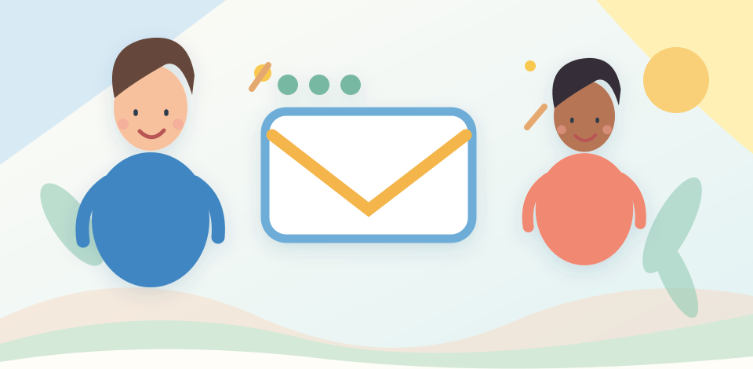
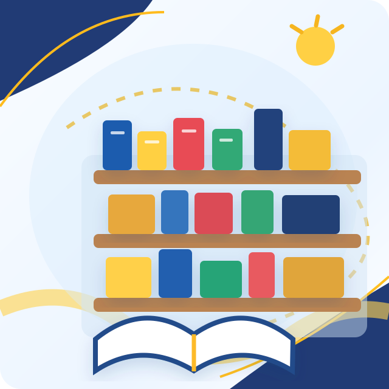
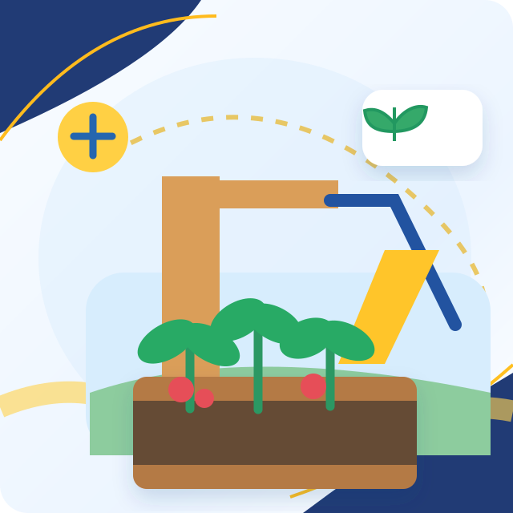
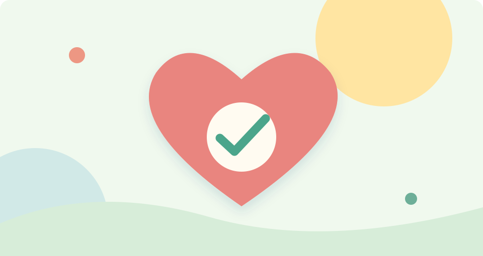
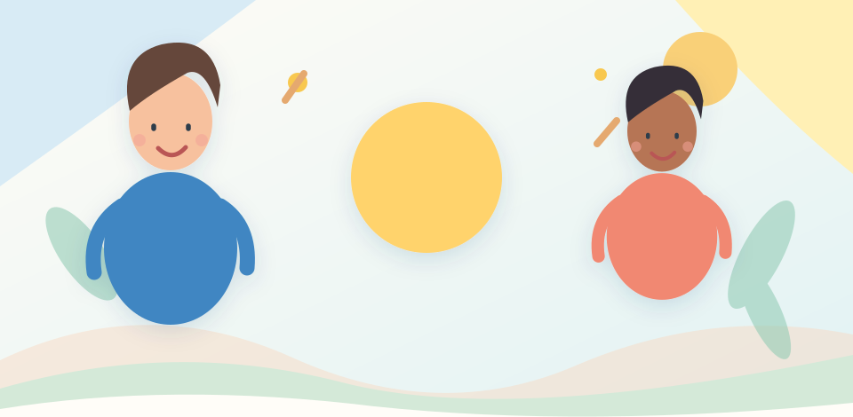
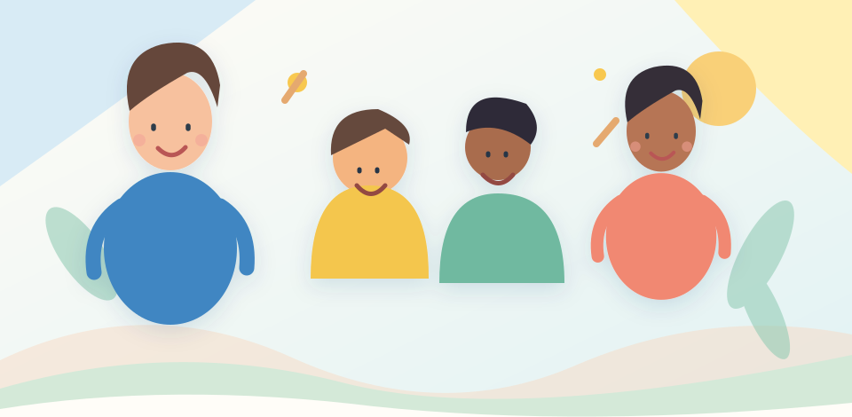

CompromissoLinha Aberta APEE
Canal institucional para dúvidas, sugestões e comunicação entre famílias e Associação.
Conhecer este projeto →Conheça o programa de trabalho que orienta esta nova etapa da Associação.

CompromissoCanal institucional para dúvidas, sugestões e comunicação entre famílias e Associação.
Conhecer este projeto → Proposta
PropostaInformação e agenda, cartão digital, documentos, notícias e ligação à comunidade.
Conhecer este projeto →
PropostaEncontros com autores, feiras do livro e incentivo à leitura.
Conhecer este projeto →
PropostaIniciativas de aprendizagem, sustentabilidade e espaços mais inclusivos.
Conhecer este projeto →
CompromissoBanco de material solidário e maior proximidade às necessidades das famílias.
Conhecer este projeto →Parcerias com o comércio local e possíveis benefícios para associados.
Conhecer este projeto →
CompromissoDiálogo regular, comunicação aberta e prestação de contas.
Conhecer este projeto →
CompromissoAcompanhamento das preocupações das famílias nos serviços do quotidiano.
Conhecer este projeto →